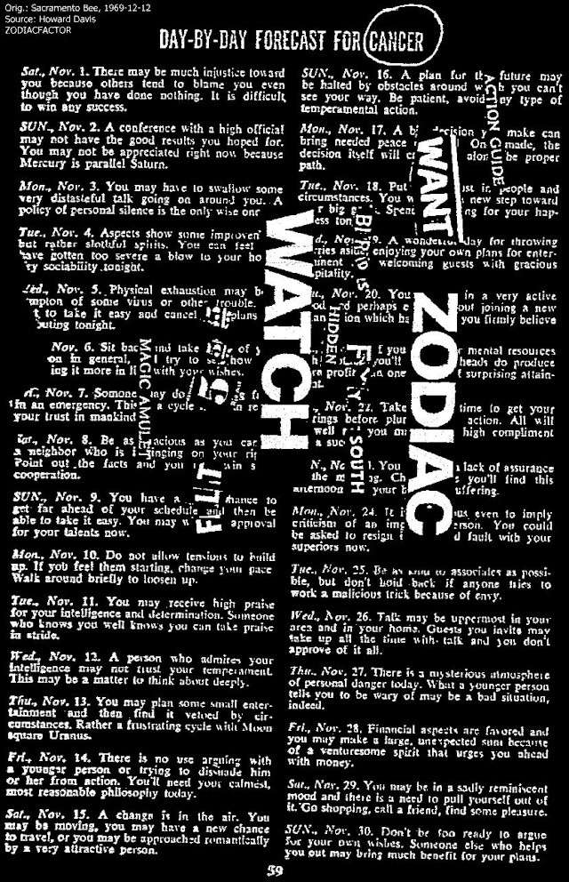
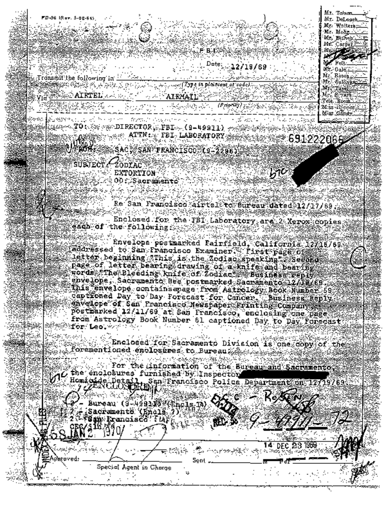

|
Unconfirmed Zodiac Letter - Cancer FLT 555 Paste-up Message |
|
|
|
A
page from The Zodiac / Manson Connection book first
printed in March 1997. |
|
|
|
 |
|
|
|
|
|
(Dave's Note: I found the above image here. But I did not find an image of the envelope Howard mentions below.)
We believe, and so did Zodiac expert and police reporter Dave
Peterson, that Zodiac sent this envelope containing a torn-out
page from an astrology magazine with a message pasted onto it. The magazine was "Astrology -Your Daily Horoscope" published by
Popular Library, New York, New York. Peterson believed that
this magazine helped guide
Zodiac
in his �timed� attacks. We were the first to publish this little
known paste-up in our book in 1997. |
|
|
|
The envelope is a standard business envelope for classified
ads to be placed in the Sacramento
Bee newspaper. Note the
Zodiac-like cross out
of the words "Classified Dept." on the envelope. We
believe Zodiac did this so the mail would not be forwarded to
that particular inbox and instead go to the regular inbox. This was mailed
from Sacramento, California on 12/10/69, the very same date Leona Roberts was
abducted from her boyfriend�s apartment. She is a
possible Zodiac victim. Click
here
to see the Roberts victim page. |
|
|
|
The enclosed astrological magazine�s torn page is for the month
of November (Scorpio, which is Charles Manson�s sun sign) and
it is for people who have the sun sign of Cancer. Cancer is a
water sign
and water
is connected to Zodiac. The word �Cancer� has been, we believe,
circled for a reason. (Explanation is below.) |
|
|
|
On the page are the pasted on words: ACTION GUIDE, WANT ZODIAC,
WATCH, FLT 555 (which is pasted upside down), BIRDS FLY SOUTH,
HIDDEN MAGIC AMULET. |
|
|
|
We interpret this as saying, �If you want the Zodiac killer then
use this �action guide� (just as the astrology information was
an �action guide�) and watch Flight 555.� Dave Peterson told us
that a reporter had found out that there was a United Flight 555
that flew from San Francisco to San Diego every Wednesday at
7:30 PM. This direction of flight seems to confirm the pasted
words "birds fly south" as San Diego is south of San Francisco.
Bird(s) is slang for a plane. It is also a slang term in Great
Britain for young females (the Zodiac�s British connection -
there are numerous British colloquialisms in Zodiac's missives). |
|
|
|
The flight number, 555, is interesting. In neo-Nazi literature
this is used as Hitler's party number. Zodiac had sent a letter
on Hitler's birthday, 4/20/70. Bruce Davis married Nancy Pittman
(who Manson had called one of his �best assassins�) on this very same month, day and year! Manson and Davis both idolized
Hitler. Manson
had said, "Hitler had the answer to everything" and called him a
�tuned in guy who leveled the karma of the Jews!�
The same number, 555, (an occult number) was used
by Aleister Crowley, the British black magician, and Manson
and Davis both followed his teachings. Zodiac killed Paul Stine
in San Francisco on Crowley's birthday. |
|
|
|
On this
paste-up message the ambigram, or inverted wordage, is "FLT
555." On the "bloody cross" paste-up card of 10/5/70 it has the
"P.S." message upside down or as an ambigram. Then on the
3/22/71 Pines card paste-up it has as the ambigram "around in
the snow." So all three paste-ups have upside down
writing. In the occult sometimes words or symbols are written as
an ambigram, or upside down. The inverted cross of Christ is one
example of a symbol presented as an ambigram. Whether or not
this was used to
link
all three paste-ups to
the same author,
or Zodiac,
and/or it has occult meaning remains to be seen. |
|
|
|
Since Zodiac had a penchant for double meanings in his
communications was this �southerly� direction pointing to
previous victims? Click
here to see about a young
couple slain in San Diego in 1964 that the press called the
�Seaside
Honeymoon Slayings.� Note the fact that it was a couple and
there was water nearby - Zodiac traits. Nikki Benedict was
murdered in Poway, a suburb of San Diego, in 1967. Click
here
to see about this case.
After
Darlene Ferrin's
death at the hands of Zodiac,
her younger sister, Christina,
moved to San Diego with her husband who was in the Navy. She
told us that she was �followed.� They even went to the Naval
authorities regarding this. San Diego may have had connections
for Zodiac. |
|
|
|
Tex Watson had been arrested in Texas on a warrant from Los
Angeles and on
December 10th, the postmark date, was in court there
concerning extradition to LA. Also, Susan Atkins, Leslie Van Houten, and Linda Kasabian
were all brought before the judge at LA Superior Court on the 10th. The day before, when the paste-up
was no doubt contrived, Manson was brought before the court in
Independence, California to be charged with murder. On this day,
the 9th,
there was a new moon - a connection to Zodiac, who would like
new moons due to his interest in astrology. Stine had been
killed on a new moon as well as Jensen and Faraday. Also around
this same time Manson victim Jerome �Shorty� Shea's car was
found. Bruce Davis' palm print had supposedly been found on
Shea's locker. |
|
|
|
Zodiac letter dates always seem to be timed with Manson Family
events! |
|
|
|
A puzzle that had bothered us for many years was the pasted
words "hidden magic amulet." |
|
|
|
In July 2010 a letter dated 8/13/72 sent by Dave Peterson to
Sgt. Les Lundblad, the investigator of the Jensen/Faraday Zodiac
attack, was reread. Dave states, based on his research, that
Zodiac�s "sun sign was Libra. This would put his birthday in the
Libra period of Sept. 23 to Oct. 23." Bruce Davis was born
October 5 � a Libra. This letter was mailed seventeen years
before we ever had any contact with Dave. |
|
|
|
The
October 5, 1970 paste-up postcard had the same "In the
Beginning God..." postage stamp (an unusual stamp for Zodiac to
use) that was used on the October 27, 1970 Halloween card which
was another paste-up. Davis had been Editor-in-Chief (Zodiac
wrote "Dear Editor" or the like many times.) of his High School
yearbook and would have been familiar with doing paste-up work.
According to his sister he was also into art, etc. Portions of
the Zodiac�s paste-ups (if we count the 3/22/70 Pines card (anniversary of
the Kathleen Johns attack)) were actually �brush
painted,� which seems to link the cards to the same author. |
|
|
|
We will be commenting more on this Peterson letter later, but
Peterson shows Sgt. Lundblad why he felt Zodiac was a Libra. |
|
|
|
Now, to get back to the "hidden magic amulet" paste-on: What is
hidden and what is a magic amulet? As this letter of Peterson's
was reanalyzed it suddenly became clear that Zodiac had
connected, in his usual very subtle manner, his sun sign of
Libra to the
circled word �Cancer�
on the torn-out magazine page. |
|
|
|
As is commonly known in the occult, astrology symbols or signs
and the planets are used as �magic amulets!� The �magic amulet�
referred to in the paste-up was his astrology sign! |
|
|
|
So how and where is this link �hidden�? Zodiac had craftily
circled the water sign Cancer. Zodiac has been connected to
water. But, the real connection or link was that in the July
issue of this magazine (Cancer is the astrological sign for
July.) it says for those with the sun sign of
Libra, "Uranus has reentered your sun sign (Libra) . . . It will
have an increasing influence on your life . . . Venus, which
rules Libra, is making various aspects this week . . . on July 5
and 7, Venus makes inspiring aspects to Jupiter and Uranus (on
July 4/5 was the Ferrin/Mageau Zodiac attack) . . . Starwise you have an
inside track in several ways - but you must recognize
opportunities when they are available and be ready to handle
them in a judicious way." |
|
|
|
The Cancer section of the July issue actually delineates the
exact date of the Zodiac attack on July 4 and that Libra is
connected! So Zodiac's �hidden magic amulet� is his ruling
planet, Venus, which rules his sun sign of Libra! This further points to
Zodiac being a Libra and Bruce Davis was a Libra and into astrology and the
occult. The
10/5/70
paste-up also points to Davis as he was born
10/5
as given.
The date of Zodiac�s Halloween
card was 10/27/70 the year-to-the-day date of when Davis was
released from jail on 10/27/69! |
|
|
|
According to witnesses, while in England Davis associated with
some members of a coven in Manchester. One book written in Great
Britain also says Davis associated with a satanic group while
there. Manson was into Satanism as well as witchcraft and
Druidism. Manson was into astrology, too. Manson used to tell
people, "I am a Scorpio." Attorney Bugliosi in his book
Helter Skelter brought out this fact. Bugliosi even looked-up in astrology
columns, knowing of Manson's belief in astrology, to see if he
followed them in regards to murder dates, etc. And, as given, the torn-out page was for the month of November 1969,
which is the month of Scorpio, Manson's sun sign. With the Manson/Davis team what
one was into so was the other. |
|
|
|
FBI file 9-HQ-49911 Section 3 Page 42 |
|
|
|
 |
|
|
|
(Dave's Note: I restored the missing image from the FBI files. I hope I picked the correct one.)
Note that the Cancer FLT 555 paste-up is mentioned on this FBI report
page as well on at least three other pages in this FBI file.
Also note that another torn page, that was sent to the San
Francisco Newspaper Printing Company, was from this same series
of publications and is for Leo. (Zodiac�s 1966 Confession letter
was typed on Teletype paper that had been torn off of the roll.
The Riverside Police Department had thought this was odd.) It is our opinion that Zodiac
used these particular publications to assist in timing his
attacks. For example, the July fourth attack at Blue Rock
Springs is right on for the month of July
if one is
a
Libra.
And that was Peterson's contention -
in 1972
- that Zodiac was a Libra! |
|
|
|
It is of
interest that the other torn-out page mentioned in the FBI
reports is for Leo or the month of August 1969. This is
when Manson's associates murdered Sharon Tate and her friends as
well as the LaBiancas. The dates were August 8th and
9th and three months to the day of when Zodiac sent
two letters on the 8th and 9th of
November, the month on the above torn-out astrology magazine
page! |
|
|
|
As given, Bruce Davis was involved in the vicious stabbing death
of Jerome Shea on August 27, 1969 during a full moon. There are
many 27s involved. July 27, 1969 Gary Hinman was murdered with
Davis being involved. (He was found July 31st when
Zodiac mailed his letters to the Northern California
newspapers.) On
September 27th Zodiac attacked at
Lake Berryessa.
On October 27, 1969 Davis was released from jail having been in
there since he was arrested on October 12th at 6:30
PM. A
year
later, Zodiac sent the Halloween card on October 27, 1970. |
|
|
|
Numerology uses fadic math in which a 27 equals 2+7=9. We have
mentioned the importance of the number 9 on this site and in our
book and soon will have vital information displaying just how
important this number was to Zodiac. |
|
|
|
See our book for more comments on this subject. |
|
|
|
|
|
Back to
Updates page |
|
|
|
Back
Contents
Top
of page |
|
|
|
|
|
|